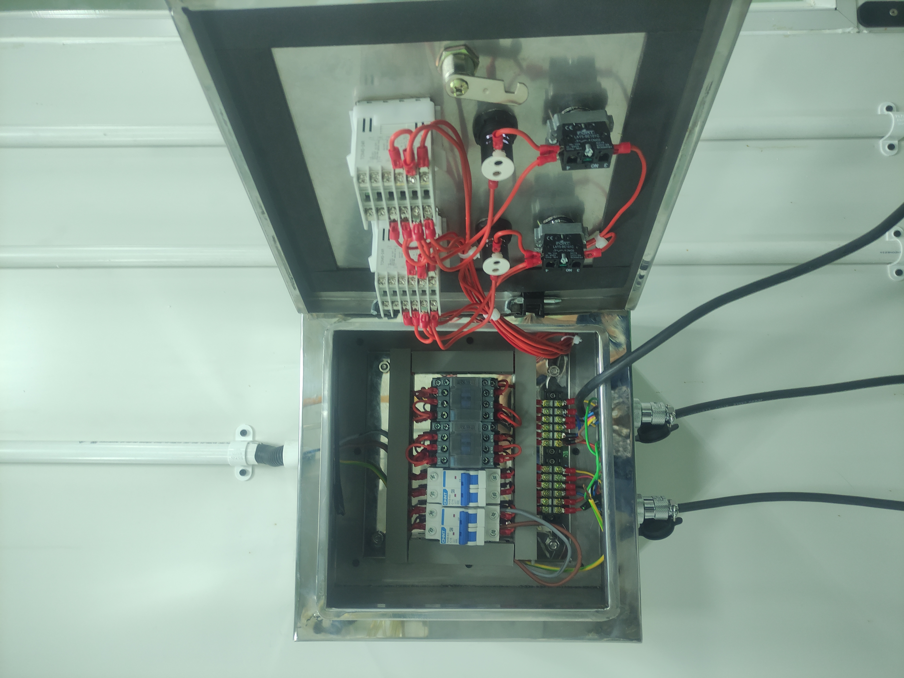
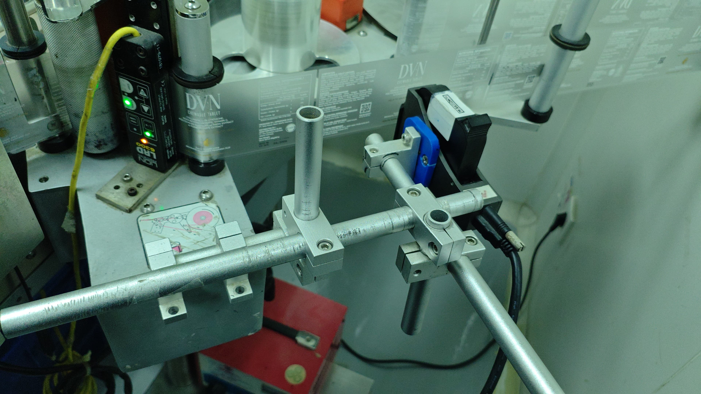

Based In
Jakarta, Indonesia
Project Highlights
Selected engineering projects demonstrating practical problem-solving, technical implementation, and continuous improvement across manufacturing and automation systems.
SELECTED WORK
Engineering in Action
From system development to equipment improvement, every project is an opportunity to create better processes.
 13
↗
13
↗
IOT MONITORING
2026
Integrated IoT-Based Machine & Smart Energy Monitoring System
An IoT-based monitoring solution for tracking machine operating hours and electrical parameters to support energy analysis and data-driven maintenance decisions.

12 ↗
INDUSTRIAL AUTOMATION
2025
Heater Control Panel for Gelatin Storage Tank
An equipment control improvement focused on gelatin tank heating, process temperature stability, and reliable operating conditions.
 11
↗
11
↗
INDUSTRIAL PROCESS ENGINEERING
2025
Development of Food-Grade Teflon Coating for Mixing Machine
An improvement to product-contact surfaces using food-grade PTFE coating to support material release, cleaning, and manufacturing hygiene requirements.

10 ↗
INDUSTRIAL AUTOMATION
2025
Adding Coding System to Bottle Labeling Machine
A production equipment improvement focused on product coding accuracy, consistent packaging operations, and reliable production-line performance.
ENGINEERING PHILOSOPHY
More Than Just Engineering Projects
Practical solutions, thoughtful engineering, and a commitment to continuous improvement.